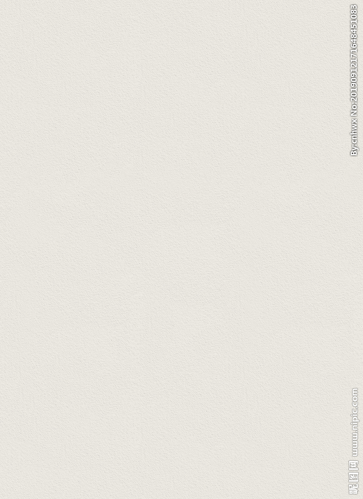

古都风情
返回
中国传统文化源远流长，是迄今世界上最久远、最稳定、最辉煌、最丰富、最发达的文化之一，有着不可抵挡的神奇魅力。从定义来说中国传统文化是中华.文明演化而汇集成的一种反映民族特质和风貌的民族文化，是民族历史上各种思想文化、观念形态的总体表征，是指居住在中国地域内的中华民族及其祖先所创造的、为中华民族世世代代所继承发展的、具有鲜明民族特色的、历史悠久、内涵博大精深、传统优良的文化。但是从中国传统文化的范畴来说，我们不能不感叹中国文化的博大精深;因为它涵盖了中华民族生活的方方面面，我们的衣食住行无一不体现出传统文化对我们的影响。
西安风情
风景名胜：秦始皇兵马俑、大雁塔、小雁塔、兴教寺塔、大明宫、未央宫、秦始皇陵、华清池、大唐芙蓉园、陕西历史博物馆、西安明城墙、西安碑林博物馆、西安博物院、骊山、翠华山、曲江海洋世界、秦岭野生动物园、西安世博园等
特色小吃：biángbiang面、饺子宴、秦镇凉皮、牛羊肉泡馍、老童家腊羊肉、锅盔、肉夹馍、腊汁肉、葫芦头、蜜枣甑糕、石子馍等。
绘画：中国国画中的长安画派、起源于汉代以前的关中皮影戏、源于西周的陕西木偶戏以及色彩浓郁的户县农民画钟馗故里钟馗画等都是西安文化中不可或缺的重要组成部分。20世纪的60年代，一个以赵望云、石鲁为代表的西安美术团体，在北京等地组织了一次巡回展，他们以表现黄土高原古朴倔强为特征的山水画和表现勤劳淳朴的陕北农民形象的人物画，人称“长安画派”。
北京风情
风景名胜：北京是全球拥有世界遗产（7处）最多的城市，是全球首个拥有世界地质公园的首都城市。北京对外开放的旅游景点达200多处，有世界上最大的皇宫紫禁城、祭天神庙天坛、皇家园林北海公园、颐和园和圆明园，还有八达岭长城、慕田峪长城以及世界上最大的四合院恭王府等名胜古迹。
饮食文化：北京是世界第八大“美食之城”，居内地之首。京味小吃的代表有豆汁儿、豆面酥糖、酸梅汤、茶汤、小窝头、茯苓夹饼、果脯蜜饯、冰糖葫芦、艾窝窝、豌豆黄、驴打滚、灌肠、爆肚、炒肝等。
京剧：京剧是中国国粹。京剧的源头还要追溯到几种古老的地方戏剧，1790年，安徽的四大地方戏班——三庆班、四喜班、春公班、和春班——先后进京献艺。徽班常与来自湖北的汉调艺人合作演出，于是，一种以徽调“二黄”和汉调“西皮”为主，兼收昆曲、秦腔、梆子等地方戏精华的新剧种诞生了，这就是京剧。
南京风情
风景名胜：台城、鸡鸣寺、玄武湖、白马公园、古林公园、清凉山、石头城、莫愁湖、朝天宫、栖霞山、南唐二陵、明孝陵、明城墙、明故宫、玄武湖、鼓楼、阅江楼、中华门、天生桥、胭脂河、清凉门、鬼脸城、仪凤门等。
语言：南京大部分地区通行南京官话，高淳区大部、溧水区南部地区的方言则通行吴方言。南京话在历史上长期是中国的官方语言，金陵雅言以古中原雅言正统嫡传的身份被确立为中国汉语的标准音，并深远地影响到直至今天的中国语言形态，加之六朝以来汉人文化上的优越意识，清代中叶之前历朝的中国官方标准语均以南京官话为标准。
书画：南京是中国绘画、书法的重镇。在六朝时有王羲之、顾恺之等书画大家。明末清初，南京曾经产生过金陵八家以及金陵九子，并形成金陵画派。1930年代，吕凤子、徐悲鸿、张大千、颜文梁、吕斯百、陈之佛、高剑父、潘玉良、庞薰琴等画坛名流云集南京，形成新金陵画派，其中徐悲鸿、张书旗、柳子谷被称为画坛的“金陵三杰”。现代书画界又有12位南京知名画家、书法家被称为金陵十二家。20世纪中后期，还出现了“新金陵花鸟派”的金陵四杰——李味青、赵良翰、韩少婴、张正吟。
洛阳风情
风景名胜：龙门石窟、白云山、老君山、鸡冠洞、龙潭大峡谷、关林、白马寺、重渡沟、龙峪湾国家森林公园、栾川抱犊寨景区、养子沟、伏牛山滑雪场、天池山国家森林公园、木札岭原始生态旅游区、神灵寨国家森林公园、黄河小浪底风景区等
名优特产：洛阳水席：河南省洛阳市一带特色传统宴，属于豫菜系。
四镇桌：燕菜、葱扒虎头鲤、云罩腐乳肉、海米升百彩。
八大件：快三样、五柳鱼、鱼仁、鸡丁、爆鹤脯。
四扫尾：鱼翅插花、金猴探海、开鱿争春、碧波伞丸。
洛阳汤：羊肉汤，牛肉汤，丸子汤，驴肉汤，豆腐汤，不翻汤，胡辣汤。
文化遗产：河洛大鼓、唐三彩烧制技艺、真不同洛阳水席制作技艺、关公信俗、洛阳牡丹花会、洛阳宫灯、平乐郭氏正骨、河图洛书传说。
开封风情
风景名胜：龙亭公园、铁塔、相国寺、包公祠、延庆观、禹王台、繁塔、清明上河园、宋都御街、朱仙镇岳飞庙、开封纪念塔等。
文物古迹：鹿台岗遗址、段岗遗址、启封故城、祐国寺塔、北宋东京城遗址、尉氏兴国寺塔、开封城墙、朱仙镇清真寺、山陕甘会馆、国共黄河归故谈判旧址等。
风俗民情：开封是享誉中国的著名民间艺术之乡，享有“中国戏曲之乡”、“中国木版年画之乡”、“中国汴绣之乡”、“中国菊花之乡”等美誉，境内有汴绣、官瓷、朱仙镇木板年画等精美工艺品，现存有庙会、灯会、鸟市、花市、夜市、风筝、斗鸡、盘鼓、舞狮、盘鼓、高跷、旱船、唢呐等丰富多彩的民间艺术
杭州风情
风景名胜：杭州拥有两个国家级风景名胜区——西湖风景名胜区、“两江两湖”（富春江——新安江——千岛湖——湘湖）风景名胜区；两个国家级自然保护区——天目山、清凉峰自然保护区；七个国家森林公园——千岛湖、大奇山、午潮山、富春江、青山湖、半山和桐庐瑶琳森林公园；一个国家级旅游度假区——之江国家旅游度假区；全国首个国家级湿地——西溪国家湿地公园。
特产美食：杭州丝绸、西湖龙井、西湖藕粉、径山茶、西湖绸伞、雪水云绿茶、萧山萝卜干、临安山核桃、定胜糕、龙井虾仁等
节会：钱江观潮节
“八月十八潮，壮观天下无”每年农历8月18日，在萧山钱江观潮度假村举行国际钱江观潮节。届时，游客不仅可以欣赏举世奇观钱江潮，更可参与一系列文化体育和旅游活动。西湖博览会
西湖博览会最早创立于1929年，与1893年的“芝加哥博览会”、1900年的“巴黎博览会”和1927年的“费城博览会”一起扬名世界，并被公认为四大国际性的盛典。首届博览会总共展出国内外物品14.76万件，堪称当时中国物品的总汇。
安阳风情
地方特产：特色餐饮：道口烧鸡、老庙牛肉、安阳三熏、曹马芝麻糖、三不沾 、安阳燎花 。
地方小吃：扁粉菜、粉浆饭、安阳烩菜[37] 、皮渣[37] 、血糕、内黄灌肠、关家酥烧饼。安阳血糕为著名风味小吃，用荞麦面、猪血佐以其它配料蒸制成糕，然后切片油炸，抹上蒜汁后食用。
土特产：安阳燎花、血糕、内黄灌肠、关家酥烧饼、内黄大枣、山楂、核桃、阳梨（洋梨）、板栗、大红袍花椒等。
民间艺术：秦氏绢艺、安绣、剪叶、麦秆画。
文化遗产：中华民族最早使用的文字——甲骨文、世界上最大的青铜器—后母戊鼎（原名司母戊鼎）在这里出土问世。 截至2018年4月，安阳市共有省级以上文物保护单位91项，其中全国重点文物保护单位23项、省级文物保护单位68项，类别包括古建筑、古遗址、古墓葬、石窟寺及石刻、近现代重要史迹及代表性建筑等。
郑州风情
非遗：截至2016年10月，郑州市共有国家级非物质文化遗产6项，传承人4人；省级非遗59项，传承人26人；市级非遗185项，传承人149人。已公布五批市级项目，三批市级传承人。其中，少林功夫、新郑黄帝故里拜祖大典、超化吹歌、巩义小相狮舞为优秀非物质文化遗产项目。
饮食：郑州人的主食以面食为主，面食中又以白面（即小麦面）食品为主，粗粮面只作为营养搭配和调剂口味，需求量较小。常见的面做食品有馍（馒头）、菜馍（又叫菜蟒或菜龙）、油卷、包子、烙馍、油饼、菜盒、烧饼、油条、炸菜角等等。郑州人特别喜欢吃面条，面条的种类很多，有汤面条、捞面条、炸酱面条、卤面条、炒面条、牛羊肉烩面条等等。郑州人的副食即佐餐菜肴主要有五大类：肉菜类、青菜类、食用菌类和豆制品及蛋类。
文保：大河村遗址、裴李岗遗址、古城寨城址、西山遗址、王城岗及阳城遗址、郑州商代遗址、郑韩故城、少林寺、常住院、初祖庵、塔林、太室阙、少室阙、启母阙、中岳庙、嵩岳寺塔、会善寺、嵩阳书院、观星台、巩县石窟、宋陵、净藏禅师塔、打虎亭汉墓、荥阳故城、韩王陵、巩义窑址、后周皇陵、康百万庄园、永泰寺塔、法王寺塔、大唐嵩阳观纪圣德感应之颂碑、织机洞遗址、新砦遗址、唐户遗址、大师姑城址等。
大同风情
风景名胜：大同有“三代京华、两朝重镇”的美誉，特别是以云冈石窟、北魏悬空寺为代表的北魏文化；以华严寺、善化寺、观音堂、觉山寺塔、圆觉寺塔为代表的辽金文化；以边塞长城、兵堡、龙壁、明代大同府城为代表的明清文化，构成了鲜明的地域文化特色，可以概括为平城文化、边塞文化和佛教文化。
工艺：大同铜器和广灵剪纸。
民俗：
生旺火：大同地区煤炭资源比较丰富，它与当地人的衣食住行必然要发生各种联系。因此，煤的作用远在古代就已渗透到风俗民情之中，其中生旺火就是当地的一种风俗习惯。每逢春节除夕晚上，家家户户院落门前都要用大块煤炭垒成一个塔状，名曰旺火，以图吉利，祝贺全年兴旺之意。等到午夜十二点，鞭炮齐鸣之时，将旺火点燃。点燃后，火苗从无数小孔中喷出，状若浮图，既御寒，又壮观。大人孩子们围起一圈，有的做游戏，有的放鞭炮，男女老少都要来烤火，以图“旺气冲天”。通常谁家的火堆大，着的旺，谁家的旺气也大。
游八仙：游八仙是大同特有的一项民俗活动，始于明朝，每年的正月初八当地百姓家都会扶老携幼，聚集在寺庙和道观里，祈求来年的健康和平安。有着“游八仙，去百病“的说法。在大同市街头，滚滚人流遍布大街小巷，市民走出家门感受春节期间的欢乐。市区内的华严寺和圆通寺内，上香拜佛祈求一年平安的市民络绎不绝地出出进进，将寺院挤得水泄不通。
成都风情
风景名胜：成都十景：古堰流碧、祠堂柏森、青城叠翠、草堂喜雨、西岭晴雪、 江楼修竹、文殊朝钟、天台夕晖、青羊花会、宝光普照 。新十景：大熊猫基地、宽窄巷子、三圣花乡·五朵金花、金沙遗址、锦里、安仁古镇、黄龙溪古镇、平乐古镇、国色天乡、欢乐谷
饮食：川菜，菜式多样，口味清鲜醇浓并重，以善用麻辣著称，并以其特别的烹调方法和浓郁的地方风味，是中国四大菜系之一。
成都小吃：双流老妈兔头、夫妻肺片、担担面、龙抄手、钟水饺、韩包子、三大炮、赖汤圆、甜水面、伤心凉粉、军屯锅盔、肥肠粉等。
成都菜品：麻婆豆腐、回锅肉、鱼香肉丝、宫保鸡丁、口水鸡、青城山老腊肉、咸烧白、香水鱼、樟茶鸭、九尺板鸭、简阳羊肉汤、冒菜等。
成都火锅：皇城老妈、川西坝子、海底捞、蜀九香、大龙燚等。
手工艺：蜀绣，又称“川绣”，是以成都为中心的刺绣品总称。产于四川成都、绵阳等地。蜀绣与苏绣、湘绣、粤绣齐名，合称中国四大名绣。据文献记载，蜀国最早的君王蚕丛已经懂得养殖桑蚕。汉末三国时，蜀锦蜀绣就已经驰名天下，作为珍稀而昂贵的丝织品。唐代末期，南诏进攻成都，掠夺的对象除了金银、蜀绣，还大量劫掠蜀绣工匠，视之为奇珍异物。